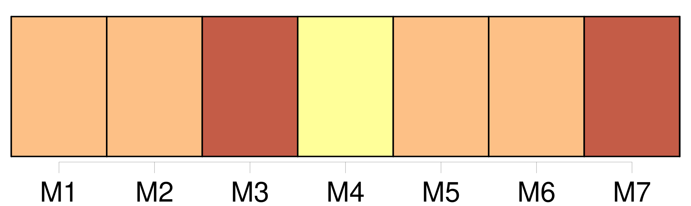
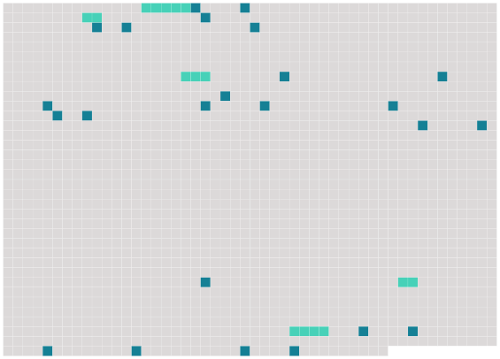

Longueur nb maillons : 29 mentions |
 |
Mes anciens camarades se sont souvent étonnés du froid survenu tout à coup entre [un de mes meilleurs amis] [qui] s'appelait, de [son] petit nom, Julien, et moi. Ils ne comprenaient point comment deux intimes, deux inséparables comme nous étions, avaient pu tout à coup devenir presque étrangers l'un à [l'autre] [1 phrases] [Lui] et moi, nous habitions ensemble, autrefois. [1 phrases]
Un soir, en rentrant, [il] m'annonça [son] mariage. Je reçus un coup dans la poitrine, comme s' [il] m'avait volé ou trahi. [5 phrases] Enfin, [mon ami Julien] se maria.
Elle était jolie, [sa] femme, charmante, une petite blonde frisottée, vive, potelée, qui semblait [l'] adorer. [2 phrases]
Peu à peu je me laissai séduire par le charme doux de cette vie commune ; et je dînais souvent chez eux ; et souvent, rentré chez moi la nuit, je songeais à faire comme [lui] , à prendre une femme, trouvant bien triste à présent ma maison vide. [1 phrases] Or, un soir, [Julien] m'écrivit de venir dîner. [1 phrases] « Mon bon, dit [-il] , il va falloir que [je] m'absente, en sortant de table, pour une affaire. [Je] ne serai pas de retour avant onze heures ; mais à onze heures précises, [je] rentrerai. [J'] ai compté sur toi pour tenir compagnie à Berthe. [4 phrases]
On se mit à table ; et, dès huit heures, [Julien] nous quittait. Aussitôt qu' [il] fut parti, une sorte de gêne singulière naquit brusquement entre sa femme et moi. [33 phrases] tromper [Julien] ?? devenir l'amant de cette petite folle perverse et rusée, effroyablement sensuelle sans doute, à qui [son mari] déjà ne suffisait plus!! [17 phrases] [Julien, tout joyeux] , rentrait. [Il] s'écria : « [Je] suis libre, l'affaire est finie deux heures plus tôt!! [3 phrases] Puis je m'aperçus que [Julien] me battait froid, comme on dit.
[Sa] femme évidemment sapait notre amitié ; et peu à peu [il] m'éloigna de chez [lui] ; et nous avons cessé de nous voir. |
 |
Il est possible de télécharger la ressource sur la page Ortolang |
Si vous avez des questions ou vous voyez des erreurs, merci d'envoyer un mail à silvia.federzoni89@gmail.com |